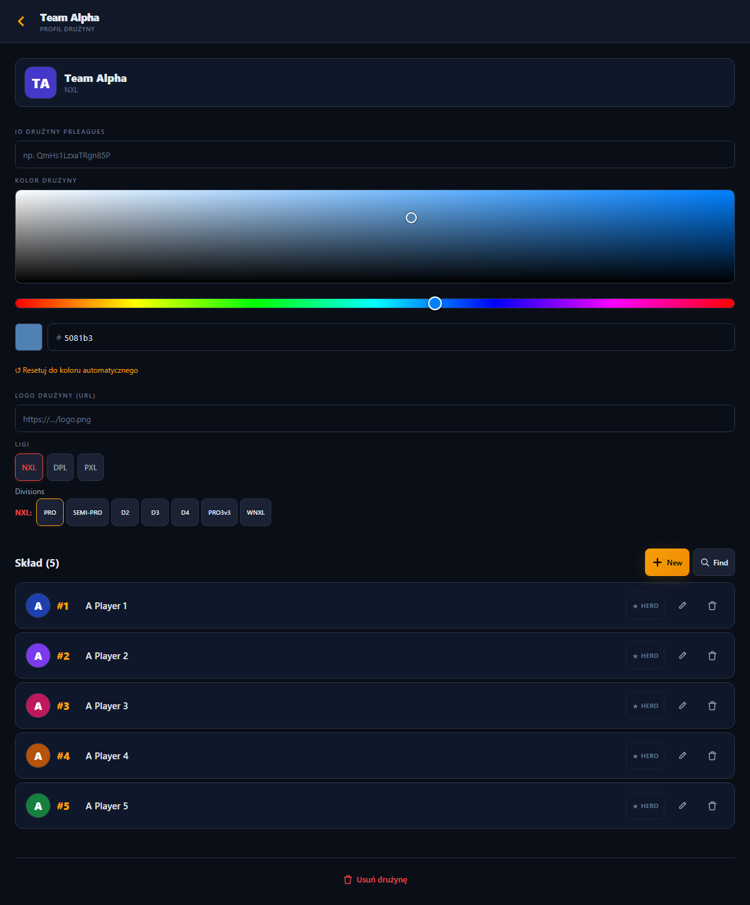
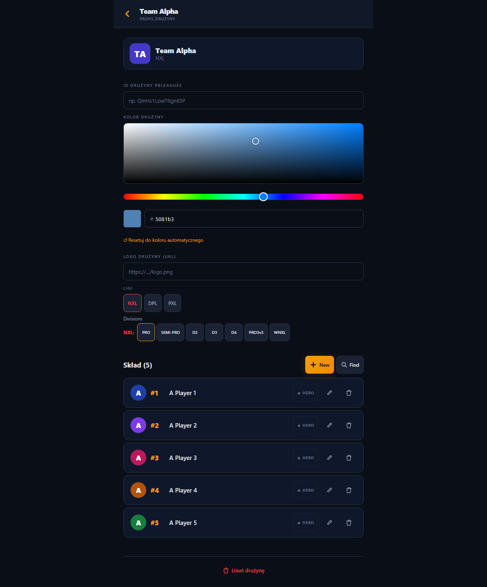
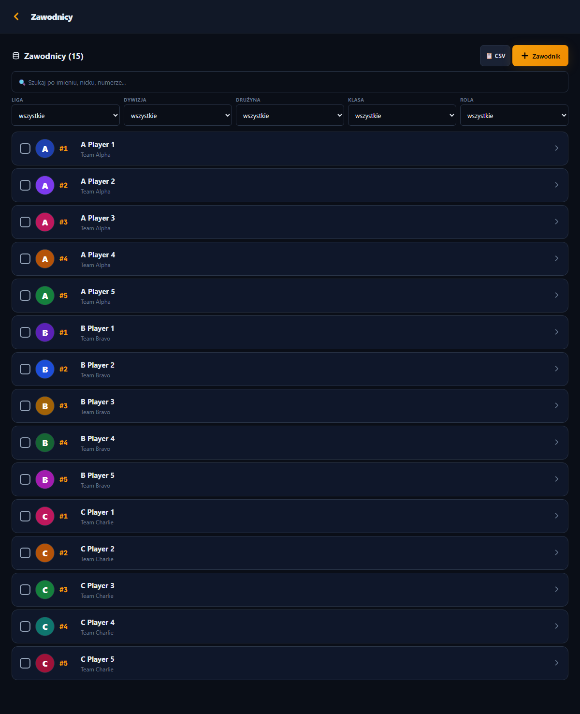
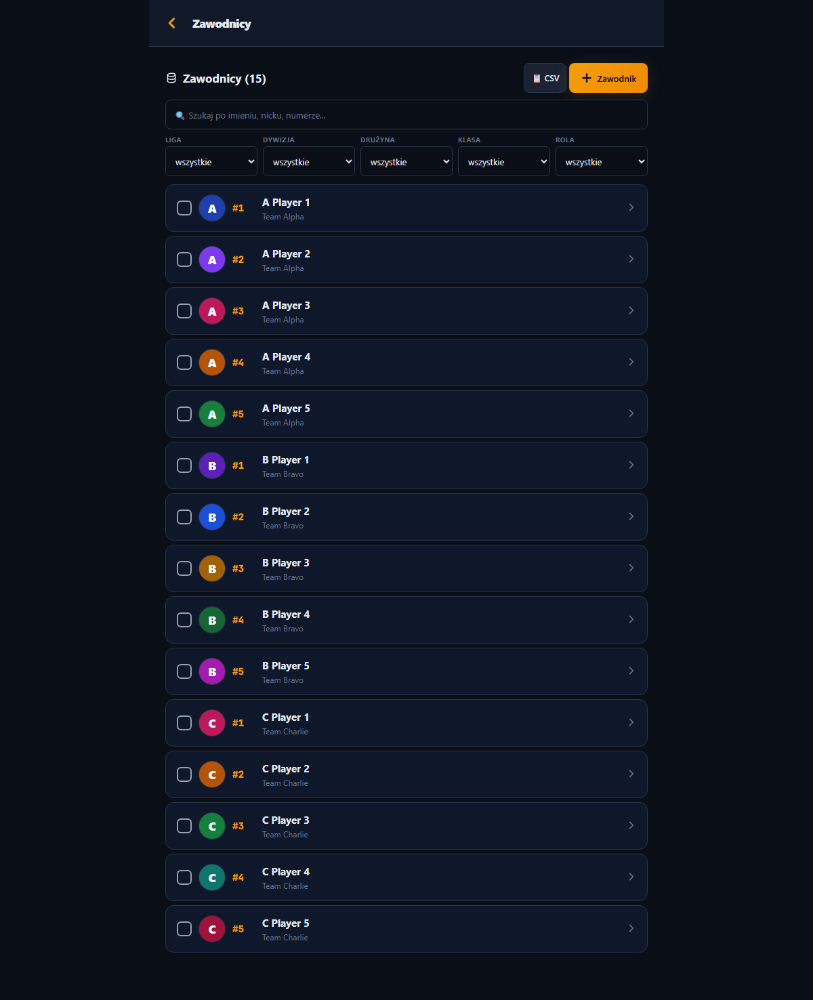
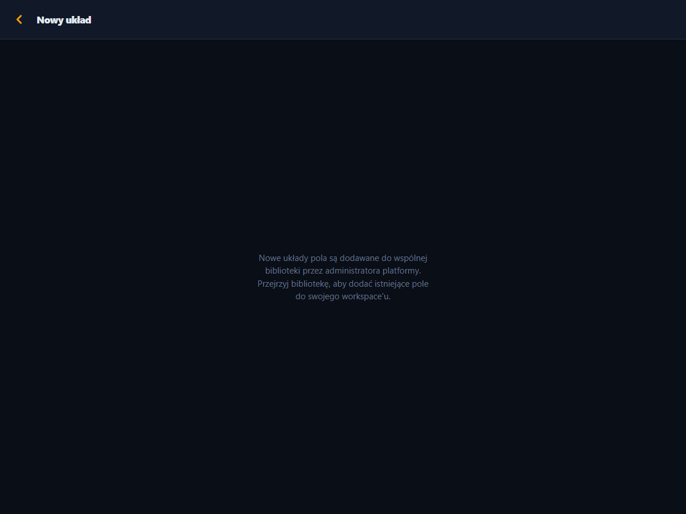
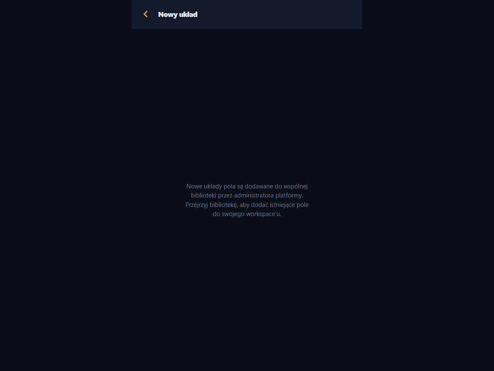

Telefon się NIE zmienia (diff=0, udowodnione). To dotyczy tylko desktopu/tabletu: ~18 ekranów jest dziś rozciągniętych do 1200, migracja zwęża je do tieru (detail 640 / list 760 / form 560 — kolumna czytania wyśrodkowana). Wybierz: zatwierdzasz zwężenie (CC migruje batchami, każdy z phone-diff=0 + wpis desktop do rejestru), albo zostawiamy 1200.






<Screen archetype>) — wiernie pokazują wynik, łącznie z marginesami tła po bokach. Header też się zwęża, bo PageHeader
siedzi w tej samej kolumnie. To jedyna widoczna różnica całej migracji poza telefonem; po decyzji CC dowozi resztę batchami.